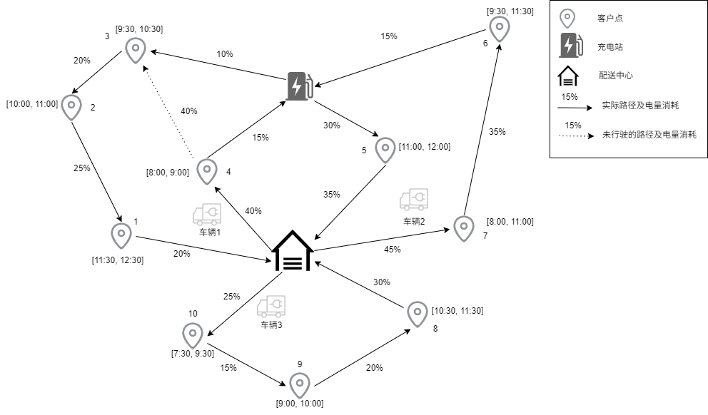

带时间窗的电动车辆路径规划问题（Electric Vehicle Routing Problem with Time Windows, EVRPTW）的问题描述如下：区域内存在一个车场或配送中心，一个或多个充电站以及若干个客户，每个客户都有明确的服务需求和服务时间窗口，且服务时间已知。车辆的行驶过程需要保证电量、时间、货物容量上的可行性。配送中心或车场需要派出车队并且为其设计合适的配送方案，使其以最小的总行驶成本完成所有的客户的货物配送需求。
为了简化问题，我们做出了如下假设：
- 只考虑一个充电站。
- 时间窗为硬时间窗。
- 电动车从配送中心出发时为满电量状态。
- 电动车的充电速率是线性的， 每次充电都充满。
为便于理解，下图展示了一个EVRPTW的示例，其中包含了3辆电动车，10个客户点以及1个充电站。3辆电动车的行驶路径及其电量状态（State Of Charge, SOC）如下：
- 电动车1：配送中心(100%) → 4(60%) → (45%)充电站(100%) → 3(90%) → 2(70%) → 1(45%)→配送中心(45%)。
- 电动车2：配送中心(100%) → 7(55%) → 6(20%) → (5%)充电站(100%) → 5(70%) → 配送中心(35%)。
- 电动车3：配送中心(100%) → 10(75%) → 9(60%) → 8(40%)→ 配送中心(10%)。

符号
给定有向图G=(V,A)，V=C∪{o,d}∪r，是图中的点集，包括了客户点集C，配送中心点o及其复制配送中心点d，充电站点r；A={(i,j)∣∀i,j∈V,i=j}, 是图中的边集。客户i的需求为qi，服务时间为li，服务时间窗为[ai,bi]。弧(i,j)的行驶时间为Tij,行驶成本为cij。电动车的充电速率g是线性的。假设电动车的电量状态为[0，且其电量消耗是与行驶距离成正比函数。为了刻画不同电动车到达同一个充电站r的剩余电量和充电时间段的不一致，我们将充电站r复制多个(每一个的坐标相同，仅编号不一样)，使用R来表示所有复制点的点集。将图G的点集更新为V=C∪{o,d}∪R。需要注意的是复制的数量不宜过多，否则会出现对称性，即访问不同得到复制点但是对应的解实际上是一样的。理论上最差是每辆车访问一个客户后就必须充电，需要复制∣C∣∣K∣个充电站。
问题建模
- 决策变量：
- xij表示从客户点i到客户点j的行驶路径，取值为0或1，0表示不选择该路径，1表示选择该路径。
- ti表示客户点i的访问时间。
- ui表示到达客户点i的剩余容量。
- 目标函数：最小化总行驶成本。
min∑i,j∈Vcijxij
- 约束条件：
- 每个客户都必须被一辆车访问一次。
∑j∈Vxij=1,∀i∈C
- 车辆必须重配送中心出发，最后返回配送中心。
∑j∈Vxoj−∑j∈Vxid=0
- 对于每个客户点离开的车数量必须等于进入的该客户点数量， 即车辆的流平衡约束。
∑i∈Vxij−∑j∈Vxji=0,∀j∈C∪R
- 车辆的容量约束。
ui+qi−uj≤M(1−xij),∀(i,j)∈A
- 车辆的行驶时间约束。
- 不存在充电过程的弧：
包括配送中心与客户点之间的弧，以充电站复制点为起点的弧。
ti+li+Tij−tj≤M(1−xij),∀i∈C∪o,j∈V
- 存在充电过程的弧：
当电动车访问以充电站为起点的弧，表明电动车进行了充电。为了对电动车的电量状态进行建模，需要记录电动车到达客户点的SOC的决策变量。引入非负变量yi表示电动车到达点i时已消耗的电量，且yi∈[0,1], 那么到达客户点的剩余电量为1−yi。电动车的充电时间约束为：
ti+gyi+Tij−tj≤M(1−xij),∀i∈R,j∈C∪d,
其中gyi表示充满电的时间。
- 行驶过程中的电量约束：用参数Eij表示电动车在弧(i,j)行驶过程中的电量消耗。
-
以配送中心或者充电站点为起点的弧(i,j),i∈{o}∪R,j∈C∪{d}, 电动车到达点j时已消耗的电量为Eij,那么yj=yi+Eij=0+Eij=Eij。
Eij−yj≤M(1−xij),∀i∈{o}∪R,j∈V
-
以客户点为起点的弧(i,j),i∈C,j∈V, xij=1, 那么yj=yi+Eij。
yi+Eij−yj≤M(1−xij),∀i∈C,j∈V
完整的EVRPTW数学模型如下：
mins.t.i,j∈V∑cijxijj∈V∑xij=1,j∈V∑xoj−j∈V∑xid=0i∈V∑xij−j∈V∑xji=0,ui+qi−uj≤M(1−xij),ti+li+Tij−tj≤M(1−xij),ti+gyi+Tij−tj≤M(1−xij),Eij−yj≤M(1−xij),yi+Eij−yj≤M(1−xij),ai≤ti≤bi,0≤ui≤Q,0≤yi≤1,xij∈{0,1},∀i∈C∀j∈C∪R∀(i,j)∈A∀i∈C∪o,j∈V∀i∈R,j∈C∪d∀i∈{o}∪R,j∈V∀i∈C,j∈V∀i∈C∀i∈V∀i∈V∀(i,j)∈A